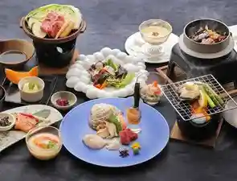
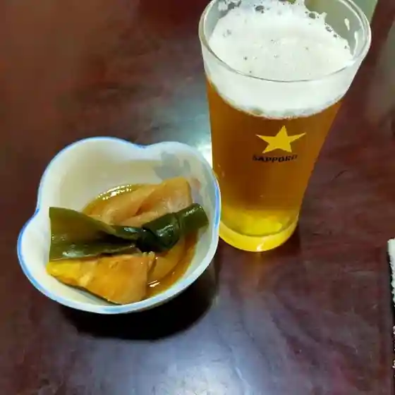
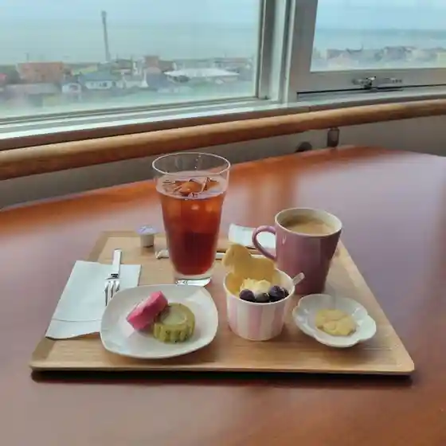
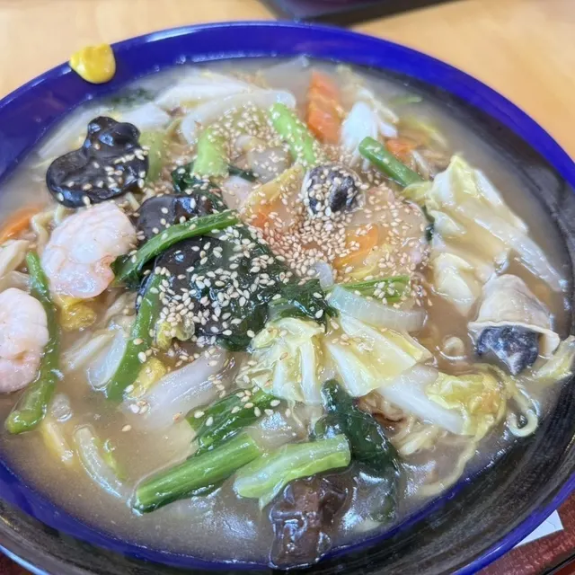
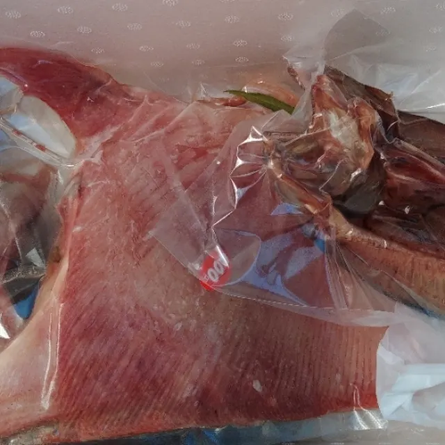
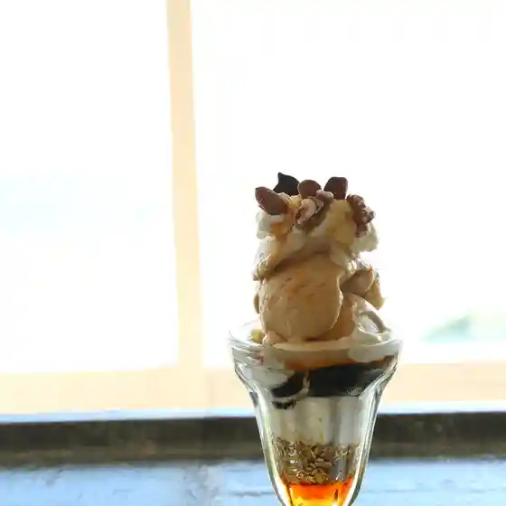
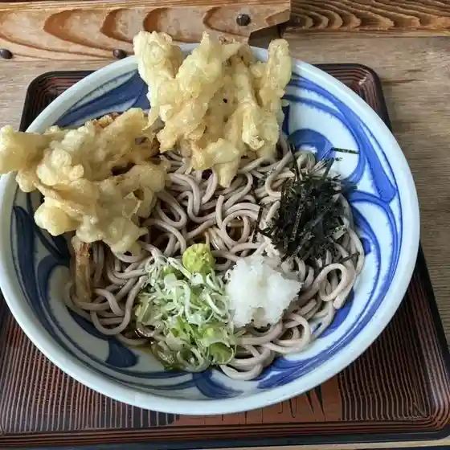
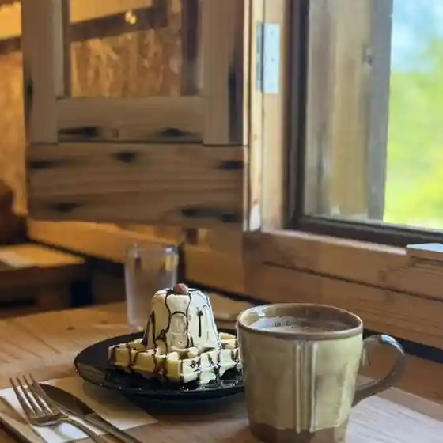
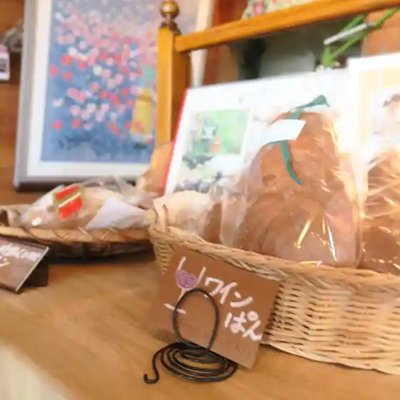

Niikappu
Niikappu · Hokkaido
Niikappu
Highlighted on the Hokkaido map.
Stay
夕陽と音楽を堪能する眺望リゾート 新冠温泉 ホテルヒルズ

Yuuhi To Ongaku Wo Tannou Suru Choubou Rizooto Niikappu Onsen Hoteruhiruzu
Dining
幸寿し

Yukitoshi Shi
Cloud9Café

Cloud9Caf E
茶屋 ゆうぐれ

Chaya Yuugure
印南商店

Innami Shouten
椿サロン 夕焼け店

Tsubaki Saron Yuuyake Mise
八文字そば

Hachi Moji Soba
農暮舎

Nou Kure Sha
茶菓いっ風

Saka Itsu Kaze
ラーメン寶龍 新冠店
Raamen Houryuu Niikappu Mise
ホテルヒルズ新冠温泉レ・コードの湯
Hoteruhiruzu Niikappu Onsen Re Koodo No Yu
新ばし
Shin Bashi
喜一郎MEAT
Kiichirou Meat
道の駅 サラブレッドロード新冠
Michi No Eki Sarabureddoroodo Niikappu
ベンチタイム
Benchitaimu
アトランティス
Atoranteisu
喫茶ぶれす
Kissa Buresu
喜一郎
Kiichirou
美松
Bishou
セイコーマート 新冠店
Seikoomaato Niikappu Mise
Niikappu sweets marche みると
Niikappu Sweets Marche Miruto
Tema灯ma:汀
Tema Tomoshibi Ma: Migiwa
NIKAP
Nikap
美よし食堂
Bi Yoshi Shokudou
cafe ゆるり
Cafe Yururi